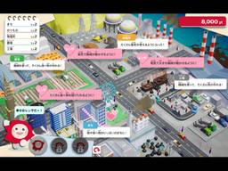
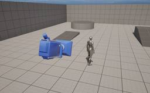

historia Inc – 株式会社ヒストリア
https://historia.co.jp
ゲームの企画・開発・制作協力の株式会社ヒストリアです。UE4やVRの最先端技術を使ってPlayStation®4などのコンシューマーゲームやアーケードゲーム、デジタルコンテンツを創出し、人生観を変えるような体験を提供します。
フィード

【実績公開】株式会社デンソーのワークショップ「HXあそび」で設置された、タブレットPCゲーム「つくろう!HX シティ」のゲーム企画・制作を担当しました。
historia Inc – 株式会社ヒストリア
ヒストリアは、株式会社デンソーが開催したワークショップ「HXあそび」にて設置された、タブレットPCゲーム「つくろう!HX シティ」のゲーム企画・制作を担当いたしました。 ■【つくろう!HX シティ】とは タ […]The post 【実績公開】株式会社デンソーのワークショップ「HXあそび」で設置された、タブレットPCゲーム「つくろう!HX シティ」のゲーム企画・制作を担当しました。 first appeared on historia Inc - 株式会社ヒストリア.
2日前

[UE5] 元の位置に戻るカメラの実装
historia Inc – 株式会社ヒストリア
執筆バージョン: Unreal Engine 5.4 はじめに こんにちは。 今回は自動で元の位置に戻ってくるカメラの実装をご紹介いたします。 実装手順 1. プロジェクト作成 Third Personテン […]The post [UE5] 元の位置に戻るカメラの実装 first appeared on historia Inc - 株式会社ヒストリア.
3日前

年末年始休暇のお知らせ
historia Inc – 株式会社ヒストリア
平素は格別のお引き立てをいただき、厚く御礼申し上げます。 誠に勝手ながら、弊社では記の期間中、年末年始休暇のため休業とさせていただきます。 皆様にはご迷惑をおかけいたしますが、何卒ご了承いただきますようお願い申し上げます […]The post 年末年始休暇のお知らせ first appeared on historia Inc - 株式会社ヒストリア.
5日前

[UE5]難易度変更に対応したシューティングゲームを作ってみよう
historia Inc – 株式会社ヒストリア
執筆バージョン: Unreal Engine 5.4 こんにちは！ 今回は、簡単なシューティングゲームを作りながら、敵パラメーターを選択した難易度によって変える実装の一例をご紹介します。 プロジェクト作成 「FirstP […]The post [UE5]難易度変更に対応したシューティングゲームを作ってみよう first appeared on historia Inc - 株式会社ヒストリア.
10日前
[UE5] インタラクト可能なモノの量産に役立つBPを作ってみよう
historia Inc – 株式会社ヒストリア
執筆バージョン: Unreal Engine 5.4 こんにちは。ゲーム開発において「プレイヤーがインタラクトすると動くモノ」を作ることがよくあると思います。しかしながら、ドアや棚や引き出し等々、それぞれのBPを都度組む […]The post [UE5] インタラクト可能なモノの量産に役立つBPを作ってみよう first appeared on historia Inc - 株式会社ヒストリア.
17日前
[UE5]Modular Control Rigを使ってみよう
historia Inc – 株式会社ヒストリア
執筆バージョン: Unreal Engine 5.4 こんにちは！ 今回はUE5.4からExperimental版として導入された『Modular Control Rig』を紹介していきたいと思います。 今までの『Con […]The post [UE5]Modular Control Rigを使ってみよう first appeared on historia Inc - 株式会社ヒストリア.
24日前
[UE5]マテリアルで頂点をカメラ方向に移動させて、Zファイトを解消してみる。
historia Inc – 株式会社ヒストリア
執筆バージョン: Unreal Engine 5.3 はじめに 今回はマテリアルで見た目のサイズ感等は変えずに、自然にZファイティングを解消させる方法をご紹介します。 参考資料 公式 https://doc […]The post [UE5]マテリアルで頂点をカメラ方向に移動させて、Zファイトを解消してみる。 first appeared on historia Inc - 株式会社ヒストリア.
1ヶ月前
【予告】12月20日(金) 「UE5ぷちコン 映像編6th」開催決定！ Unreal Engineの学習向け作品コンテスト
historia Inc – 株式会社ヒストリア
２、３日でサクッと作ってサクッと応募！ “UE5ぷちコン 映像編6th”開催決定！ 開催期間： 2024年12月20日(金)～2025年1月13日(月・祝)(1月14日(火)AM10:00)まで！ […]The post 【予告】12月20日(金) 「UE5ぷちコン 映像編6th」開催決定！ Unreal Engineの学習向け作品コンテスト first appeared on historia Inc - 株式会社ヒストリア.
1ヶ月前
[UE5] Soundscapeプラグインを使ってみる
historia Inc – 株式会社ヒストリア
執筆バージョン: Unreal Engine 5.4 はじめに 今回の記事ではSoundscapeプラグインの基本的な使い方についてご紹介します。 Soundscapeプラグインを使うことで、環境音に適したプロシージャル […]The post [UE5] Soundscapeプラグインを使ってみる first appeared on historia Inc - 株式会社ヒストリア.
1ヶ月前
[UE5] Batch Renamerを使って一括でアセット名をリネームしよう！
historia Inc – 株式会社ヒストリア
執筆バージョン: Unreal Engine 5.5preview 今回はUE5.5から増えたプラグイン「Batch Renamer」を使ってみたいと思います。 ※UE5.4では「Advanced Renamer」という […]The post [UE5] Batch Renamerを使って一括でアセット名をリネームしよう！ first appeared on historia Inc - 株式会社ヒストリア.
1ヶ月前